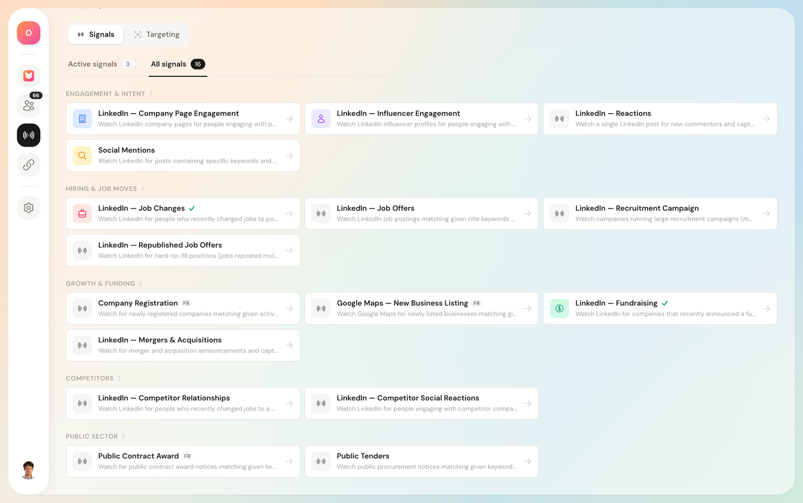
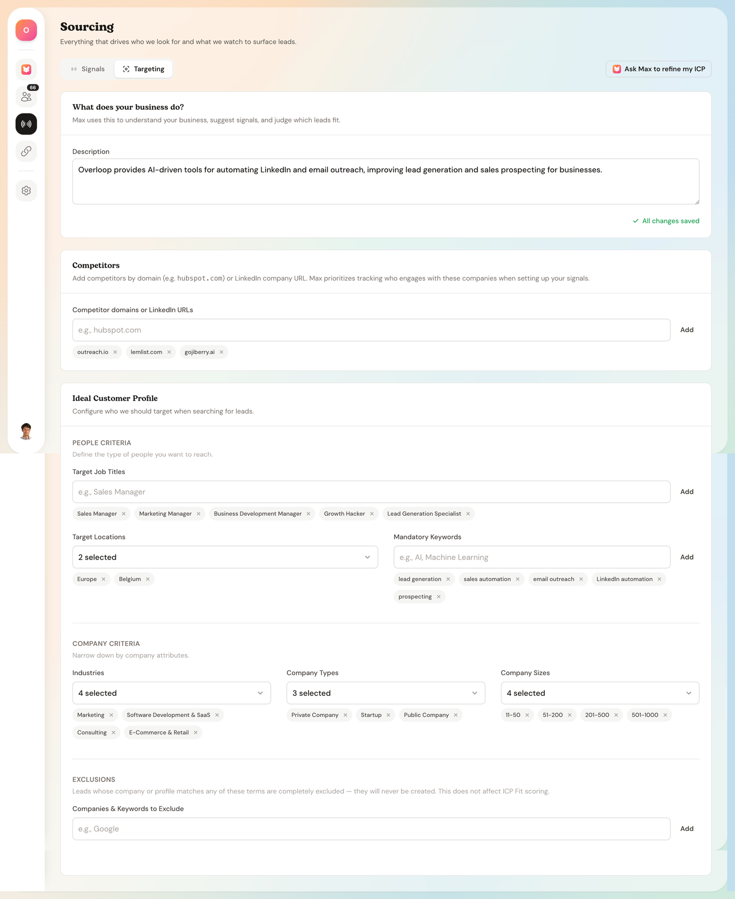
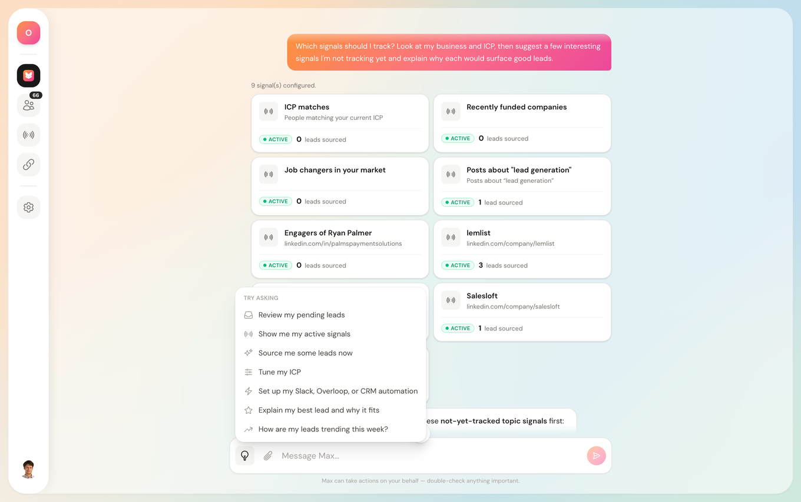
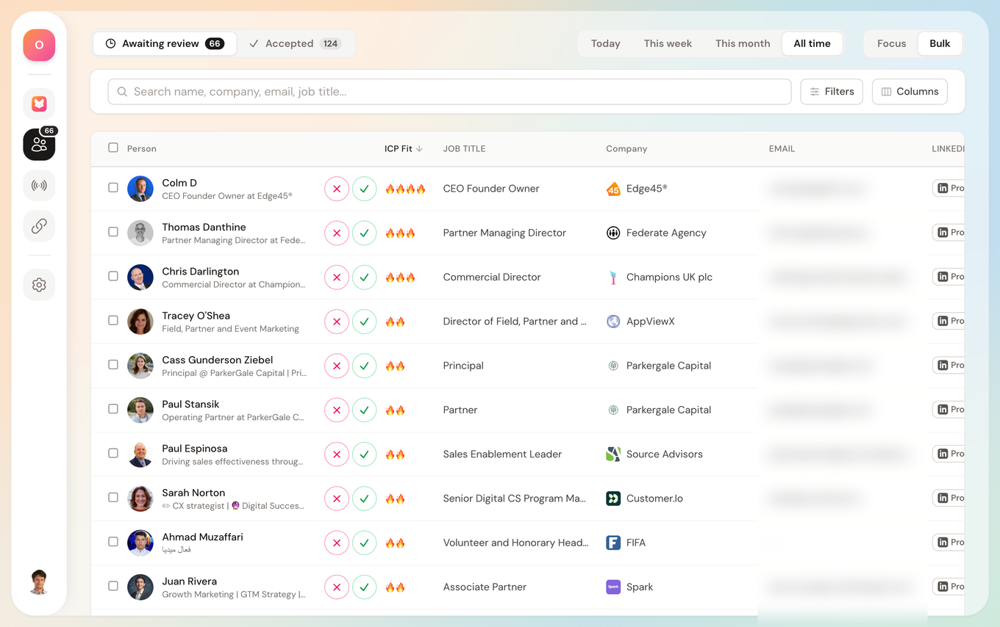
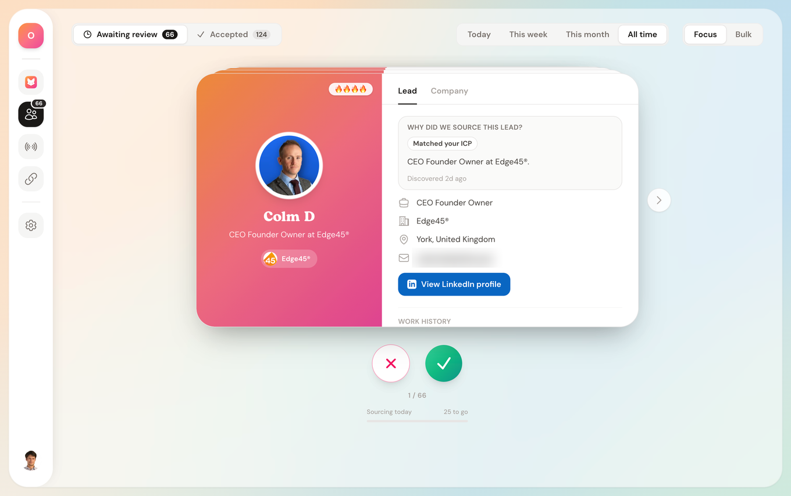
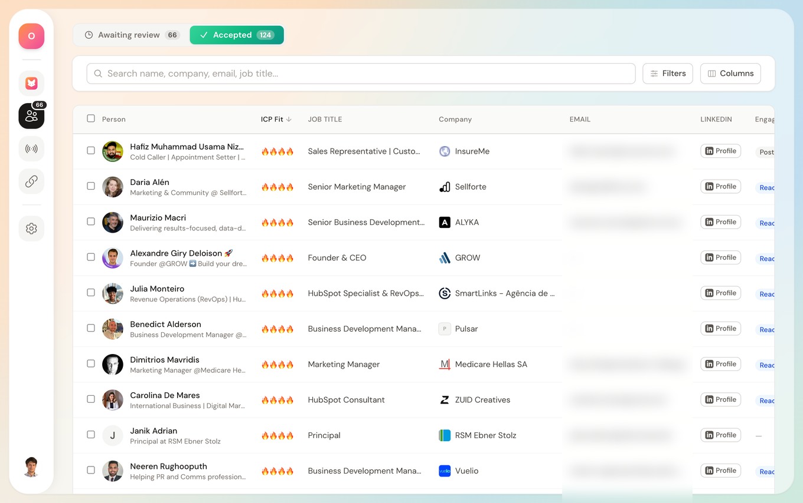
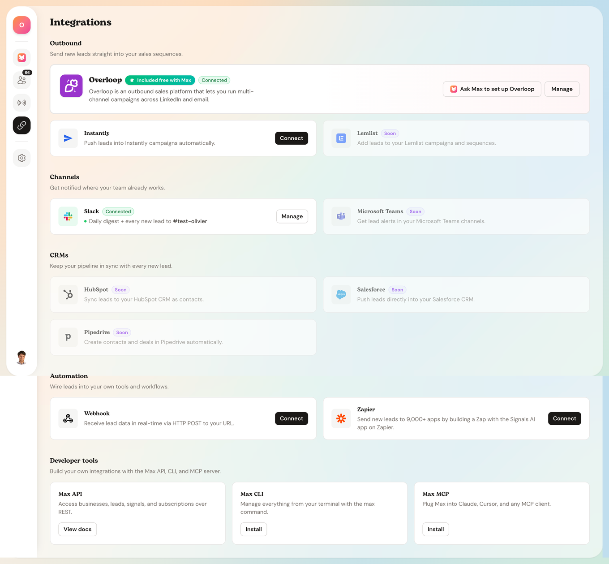

Cold outbound is broken. Here's why.
97 out of 100 people ignore cold outreach. Not because your product sucks. Because your timing does.
Traditional outbound: buy a list, blast emails, hope someone replies. 3% reply rate if you're lucky.
We flipped it. We stopped contacting people. We started listening first.
The 5 buying signals we monitor
These are the signals that actually predict who's ready to buy. Not lookalike scores. Not firmographic filters. Real behavior.
1 Job changes into decision-making roles
New CMO? New VP Marketing? They reassess every vendor in the first 90 days. That's the window. This is our highest-converting signal.
2 Competitor engagement
Someone likes your competitor's post? They care about the topic. They just don't know you yet. These people are actively evaluating.
3 Topic conversations
People literally post about the problem you solve. Every day. Nobody reaches out to them. We do.
4 Funding announcements
Fresh capital = active budget. These companies are buying. The window is 2-4 weeks after the announcement.
5 Profile and content engagement
Who's already interacting with your content? That's your warmest lead hiding in plain sight.

How Claude monitors these signals
You can track these by hand: watch a few key profiles, competitor pages, and searches on LinkedIn every morning. That's how we started. Then we got tired of the manual scan and let Max surface the signals for us, with Claude writing on top. Here's the actual setup.
Define your ICP
Tell Claude who you're looking for: role, company size, industry, geo. Claude uses this to filter noise and only surface relevant signals.

Configure your signals
Pick which signals to monitor. We run all 5, but you can start with just job changes and competitor engagement. Those two alone drove 60% of our meetings.

Claude detects and qualifies
Every day, Claude scans for new signals matching your ICP. No manual work. You get a feed of qualified leads with the signal that triggered them.

Review and push to outreach
Quick scan of the daily leads. Takes 10 minutes. Approve the good ones, they go straight into your outreach sequence.

The exact Claude prompt we use
This is the engine. We don't write messages. We don't use templates. We feed Claude the signal and it figures out the angle. The key: Claude never mentions the signal directly. It uses the signal to understand what the person cares about right now, then starts a conversation about that problem.
Copy this. Paste it into Claude. Replace the [bracketed parts] with your business.
You are writing outbound messages for me. I'll give you a buying signal about a prospect. Your job is to turn that signal into a natural, human conversation starter.
MY COMPANY (replace with yours):
- Company: Sortlist
- What we sell: We match companies with the right marketing agencies in 2 weeks instead of 3 months
- Who we sell to: CMOs, VPs Marketing, Heads of Growth at companies with 50-500 employees
- One proof point: Helped a Series B fintech go from 0 to 3 vetted agency proposals in 11 days
THE PROSPECT:
- Name: {{name}}
- Role: {{role}}
- Company: {{company}}
THE SIGNAL:
- Type: {{signal_type}} (job_change / competitor_engagement / topic_conversation / funding / content_engagement)
- Detail: {{signal_detail}}
- Date: {{signal_date}}
CRITICAL RULES:
1. NEVER reference the signal directly. Don't say "I saw your post", "I noticed you liked", "Congrats on the new role", "I saw you raised". The prospect should not feel watched.
2. Instead, USE the signal to identify what problem they likely have RIGHT NOW, then open with that problem. The signal is your intel, not your opener.
3. The message should feel like it comes from someone who lives in the same world and genuinely understands their current situation — not someone who scraped their LinkedIn.
4. ANGLE STRATEGY by signal type:
- Job change → Talk about the challenge that comes with the new role. Don't mention the move.
- Competitor engagement → Talk about the topic they engaged with. Don't mention the competitor or the post.
- Topic conversation → Respond to the idea, add a contrarian or complementary take. Don't say "I saw your post."
- Funding → Talk about the scaling challenge that follows growth. Don't mention the round.
- Content engagement → Talk about the theme of the content. Don't mention the like/comment.
5. Tone: short, direct, zero fluff. Like a text from a smart friend who works in the same industry. No "Hope you're well." No "I'd love to." No "I wanted to reach out."
6. Max 60 words for Message 1. Max 40 words for Messages 2 and 3.
7. End Message 1 with a genuine question, not a meeting request. The goal is a reply, not a booking.
8. Include ONE specific proof point (company name or metric) — but weave it in naturally, don't list it.
WRITE A 3-TOUCH CROSS-CHANNEL SEQUENCE:
Touch 1 — LinkedIn connection request + note (Day 0):
- Problem-led opener based on the signal intel. Ask a question.
- Must fit in 300 characters (LinkedIn limit for connection notes).
Touch 2 — Email (Day 2):
- Share something useful (a number, a benchmark, a take). No "following up."
- Max 60 words. Reference the same theme as Touch 1 but don't repeat yourself.
- Subject line: max 5 words, no clickbait, no caps.
Touch 3 — LinkedIn message (Day 5):
- Only if they accepted the connection. One sentence. Give them an easy out.
- Max 30 words. Conversational, like a DM to a peer.
What the output looks like
Same prompt, different signals, completely different messages. This is how we use it at Sortlist to sell agency matching. Notice: none of them mention the signal.
Signal: New CMO just joined a Series B SaaS company (job change)
Signal: Liked a post from a Sortlist competitor about agency selection (competitor engagement)
Signal: Posted about needing to scale content production (topic conversation)
How we send these across channels
You can send these three touches yourself, straight from LinkedIn and your inbox. We use Overloop so we don't have to babysit the timing. One sequence, multiple channels: LinkedIn connection on Day 0, email on Day 2, LinkedIn DM on Day 5. All personalized by Claude.
The flow in Overloop:
- LinkedIn connection + note — first touchpoint, low friction, starts the relationship
- Email — 2 days later, add value with a proof point or data
- LinkedIn DM — only if they accepted, soft close, one sentence
Claude writes all 3 touches. Overloop sends them in the right order, on the right channel, at the right time. You review the daily batch and hit go.

The 4-week plan: 0 to 10+ qualified calls per week
Here's exactly how we ramped this up. You don't need to do everything at once.
Real numbers, no BS
Here's what we actually measured over the first 2 weeks of running this system.
Before (cold outbound)
- Buy lists from Apollo/ZoomInfo
- Blast generic sequences
- 2-3% reply rate
- 1-2 meetings per week
- Hours of manual research
After (signal-based)
- Claude detects intent signals
- Every message references real behavior
- 12% reply rate
- 9-10 meetings per week
- Under 20 min/day
The tools we used
Full transparency on the stack. Nothing hidden. The only things you truly need to start are Claude and a LinkedIn account. Everything else just removes the manual work.
- Max for detecting and enriching buying signals across LinkedIn (free 7-day trial, then from €79/mo)
- Overloop for running outreach sequences (email + LinkedIn)
- Claude for ICP qualification and message generation
- Your existing CRM (we use HubSpot, but any works)

Want to try it yourself?
Run this playbook manually first. Everything above works with just Claude and LinkedIn, free, starting today. No account needed on our end.
The catch is time. Hunting signals by hand, pasting each one into Claude, sending every touch, tracking replies. It adds up fast. That's the exact grind we got tired of, so we built Max to do the detection and enrichment for us. If you want to skip the manual part, the free 7-day trial drops about 5 signal-qualified leads in your inbox every morning, roughly 25 across the week. No credit card, no call needed.
The setup takes about 30 minutes:
- Drop your website so Max builds your ICP (5 min)
- Pick 2 signal types to monitor (2 min)
- Copy the Claude prompt above and adapt it to your business (10 min)
- Connect Overloop for cross-channel sending (10 min)
- Review your first batch of signal-qualified leads the next morning
By day 3 you'll know if this works for you. Most people know by the first reply.